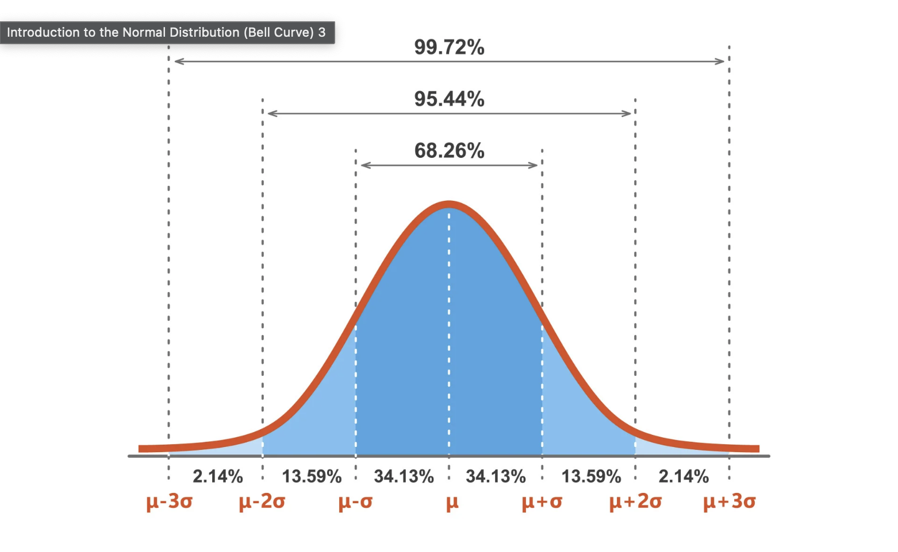

Module 1: Foundations of Statistical Reasoning and Data Analysis
Estimated Study Time: 2-3 hours
Learning Objectives
By the end of this module, you will be able to:
- Explain the fundamental purpose of statistics in scientific research
- Distinguish between descriptive and inferential statistics
- Identify and correctly name variables in research scenarios
- Classify variables by their role (IV/DV) and measurement scale (nominal, ordinal, scale)
- Calculate and interpret measures of central tendency and variability
- Create and interpret frequency distributions and appropriate visualizations
- Understand the relationship between samples and populations
- Use z-scores to standardize and compare values across different scales
- Apply basic probability concepts to statistical inference
- Perform data setup and basic analyses in SPSS
Part 1: The Purpose of Statistics
Why Do We Need Statistics?
Imagine you're a researcher trying to answer the question: "Does meditation reduce anxiety?" You could rely on personal experience, anecdotes, or intuition. But science demands something more rigorous—objective evidence based on systematic data collection and analysis.
This is where statistics comes in.
Key Concept: Statistics is the set of mathematical tools we use to organize, summarize, and interpret numerical data, allowing us to move from subjective opinion to objective evidence.
The Two Branches of Statistics
Statistics serves two fundamental purposes, reflected in its two main branches:
1. Descriptive Statistics
Purpose: To summarize and describe the data you have collected from your specific group.
Example: "In our study of 50 college students, the average hours of sleep per night was 6.8 hours, with most students sleeping between 6 and 8 hours."
When to Use:
- When you want to understand patterns in your collected data
- When presenting a summary of survey results
- When creating a profile of your participant group
- Any time you need to communicate "what the data looks like"
Common Tools:
- Averages (mean, median, mode)
- Measures of spread (range, standard deviation)
- Frequency tables
- Graphs and charts
2. Inferential Statistics
Purpose: To make educated guesses (inferences) about a larger group (population) based on data from a smaller subset (sample).
Example: "Based on our sample of 50 college students, we can infer with 95% confidence that the average sleep time for all college students at this university falls between 6.3 and 7.3 hours."
When to Use:
- When you want to generalize findings beyond your specific participants
- When testing hypotheses about population characteristics
- When determining if observed differences are "real" or due to chance
- Most research scenarios in psychology and social sciences
Common Tools:
- Hypothesis tests (t-tests, ANOVA, etc.)
- Confidence intervals
- p-values and significance testing
Why This Matters: Almost all psychological research uses inferential statistics because we can never study every single person. We study samples to learn about populations.
Real-World Applications
Medical Research: A pharmaceutical company tests a new drug on 500 patients. They use descriptive statistics to summarize the results in their sample (e.g., "60% showed improvement") and inferential statistics to estimate effectiveness in the broader population (e.g., "We are 95% confident the drug helps between 55% and 65% of all patients with this condition").
Educational Psychology: A school psychologist measures reading scores for 30 third-graders using a new teaching method. Descriptive statistics show what happened in this specific classroom. Inferential statistics help determine if the method would likely work in other classrooms.
Business Decisions: A company surveys 200 customers about a product redesign. They describe their sample's preferences, then use inference to predict how their entire customer base (millions) would respond.
Common Misconceptions
❌ Misconception: "Statistics can prove anything you want."
✓ Reality: When used correctly, statistics provide objective evidence. Misleading statistics usually involve inappropriate methods, selective reporting, or misinterpretation.
❌ Misconception: "A statistic is just a number."
✓ Reality: Statistics are numbers with context. The interpretation matters as much as the calculation.
❌ Misconception: "I only need statistics if I'm doing research."
✓ Reality: Statistical thinking helps you evaluate claims in news, advertising, health information, and everyday decision-making.
Think About It: When you see a headline like "New study shows coffee reduces heart disease risk by 30%," what questions should you ask? (Sample size? How was the study designed? What does "30%" actually mean?)
Part 2: Variables: The Building Blocks
What is a Variable?
Definition: A variable is any characteristic that can take on different values or categories across individuals, objects, or situations.
Key Point: The word "variable" comes from "vary"—it's something that changes or differs.
The Golden Rule of Naming Variables
Always name variables based on WHAT you are measuring, not HOW you are measuring it.
Example:
- ❌ "Survey_Question_5"
- ✅ "Anxiety_Level"
Practice: Identifying Variables
Scenario 1: Sleep Study
A researcher wants to know if people who exercise regularly get better sleep. They ask 100 participants two questions:
- "How many minutes do you exercise per week?"
- "How many hours of sleep do you get per night on average?"
Variables:
- Exercise_Time (measured in minutes per week)
- Sleep_Duration (measured in hours per night)
Classification System 1: By Role in Research
Independent Variable (IV)
Definition: The variable that the researcher manipulates or selects to see if it has an effect on something else.
Key characteristics:
- It comes first in time (cause)
- It's what you're testing or comparing
- It's the "input" or "treatment"
Examples:
- Teaching method (traditional vs. new)
- Medication dosage (low, medium, high)
- Study environment (quiet vs. noisy)
Dependent Variable (DV)
Definition: The variable that the researcher measures to see if it's affected by the independent variable.
Key characteristics:
- It comes second in time (effect)
- It's what you're trying to predict or explain
- It's the "output" or "outcome"
Examples:
- Test scores (affected by teaching method)
- Pain level (affected by medication)
- Memory performance (affected by study environment)
How to Identify IV and DV
Ask these questions:
- "What is the researcher trying to find out?" → This is usually the DV
- "What is being manipulated or compared?" → This is usually the IV
- "Which comes first in time?" → This is usually the IV
Memory trick: IV = "I manipulate this" | DV = "I measure this"
Scenario 2: Classroom Environment
An educational psychologist studies whether classroom lighting affects student performance. She measures:
- The brightness of classroom lights (in lumens)
- Students' test scores on a standardized math test
Variables:
- Lighting_Brightness (measured in lumens)
- Math_Test_Score (measured in points)
Scenario 3: Social Media Study
A researcher investigates the relationship between social media usage and self-esteem. They collect:
- Number of hours spent on social media per day
- Responses to a self-esteem questionnaire (scores range from 10-50)
Variables:
- Social_Media_Usage (measured in hours per day)
- Self_Esteem_Score (measured on a 10-50 scale)
Scenario 4: Job Satisfaction
An organizational psychologist wants to understand what affects employee satisfaction. She measures:
- Employee age (in years)
- Years of experience in current job
- Annual salary (in dollars)
- Job satisfaction rating (1 = very dissatisfied, 5 = very satisfied)
- Department (Engineering, Marketing, HR, Sales)
- Whether the employee works remotely (Yes/No)
Variables:
- Employee_Age (measured in years)
- Job_Experience (measured in years)
- Annual_Salary (measured in dollars)
- Job_Satisfaction (measured on a 1-5 scale)
- Department (categories: Engineering, Marketing, HR, Sales)
- Remote_Work (categories: Yes, No)
Scenario 5: Memory Experiment
A cognitive psychologist tests whether background music affects memory performance. She:
- Assigns participants to either listen to classical music, rock music, or no music while studying
- Tests their memory with a recall task (number of words correctly remembered)
- Records their heart rate during the study session
Variables:
- Music_Condition (categories: Classical, Rock, None)
- Memory_Performance (measured as number of words recalled)
- Heart_Rate (measured in beats per minute)
Scenario 6: Customer Satisfaction
A retail company wants to improve customer experience. They collect data on:
- Customer age group (18-25, 26-35, 36-45, 46-55, 56+)
- Time spent shopping (in minutes)
- Amount spent (in dollars)
- Overall satisfaction rating (1-10 scale)
- Whether they would recommend the store (Yes/No)
Variables:
- Age_Group (categories: 18-25, 26-35, 36-45, 46-55, 56+)
- Shopping_Time (measured in minutes)
- Purchase_Amount (measured in dollars)
- Satisfaction_Rating (measured on a 1-10 scale)
- Recommendation_Likelihood (categories: Yes, No)
Scenario 7: Health and Lifestyle
A public health researcher studies factors related to physical fitness. She measures:
- Participants' height (in inches)
- Participants' weight (in pounds)
- Number of servings of fruits/vegetables consumed per day
- Minutes of moderate exercise per week
- Blood pressure reading (systolic pressure in mmHg)
- Whether participants smoke (Yes/No)
Variables:
- Height (measured in inches)
- Weight (measured in pounds)
- Fruit_Vegetable_Intake (measured in servings per day)
- Exercise_Time (measured in minutes per week)
- Blood_Pressure (measured in mmHg)
- Smoking_Status (categories: Yes, No)
Scenario 8: Academic Performance
A university researcher investigates factors that predict college success. They collect:
- High school GPA (0.0-4.0 scale)
- SAT score (400-1600 range)
- Number of hours studied per week
- Whether students live on campus or commute
- First-year college GPA
- Number of extracurricular activities
Variables:
- High_School_GPA (measured on a 0.0-4.0 scale)
- SAT_Score (measured on a 400-1600 scale)
- Study_Hours (measured in hours per week)
- Housing_Type (categories: On-campus, Commute)
- College_GPA (measured on a 0.0-4.0 scale)
- Extracurricular_Count (measured as number of activities)
Why Proper Variable Naming Matters
- Clarity: Other researchers (and future you) can understand what was measured
- Reproducibility: Studies can be replicated when variables are clearly defined
- Communication: Results make sense when variables have meaningful names
- Data Analysis: Statistical software works better with descriptive variable names
Remember: Good variable names are like good street signs—they tell you exactly where you are and where you're going.
Part 3: Classifying Variables
Classification System 2: By Measurement Scale
Variables can also be classified by their measurement scale (also called level of measurement):
1. Nominal (Categorical)
- Definition: Categories with no inherent order or ranking
- Characteristics:
- Categories are mutually exclusive
- No mathematical operations possible (can't add, subtract, etc.)
- Can count frequency of each category
- Examples:
- Gender (Male, Female, Other)
- Eye Color (Blue, Brown, Green, Hazel)
- Department (Psychology, Biology, English)
- Blood Type (A, B, AB, O)
Think About It: You can say "There are 25 males and 30 females," but you can't say "Male is greater than Female."
2. Ordinal (Ranked)
- Definition: Categories with a meaningful order, but intervals between categories are not equal
- Characteristics:
- Categories can be ranked from low to high
- Can determine which is greater/lesser
- Cannot perform mathematical operations (because intervals aren't equal)
- Examples:
- Likert Scale (Strongly Disagree, Disagree, Neutral, Agree, Strongly Agree)
- Education Level (High School, Bachelor's, Master's, PhD)
- Pain Rating (Mild, Moderate, Severe)
- Letter Grades (A, B, C, D, F)
Think About It: You can say "Master's is higher than Bachelor's," but you can't say the difference between Master's and Bachelor's equals the difference between Bachelor's and High School.
3. Scale (Interval/Ratio)
- Definition: Numeric data where intervals between values are equal
- Two types:
- Interval: Equal intervals, no true zero (e.g., temperature in Celsius)
- Ratio: Equal intervals, true zero point (e.g., height, weight, age)
- Characteristics:
- All mathematical operations are meaningful
- Can calculate means, standard deviations, etc.
- True zero point (ratio) or arbitrary zero (interval)
- Examples:
- Interval: Temperature (°C or °F), IQ scores, SAT scores
- Ratio: Height (inches), Weight (pounds), Age (years), Income (dollars)
Think About It: You can say "Person A is twice as tall as Person B" (ratio) but not "Today is twice as hot as yesterday" (interval).
Discrete vs. Continuous
Discrete Variables:
- Can only take specific, separate values
- Usually counted (not measured)
- Examples: Number of children, Number of correct answers, Number of pets
Continuous Variables:
- Can take any value within a range
- Usually measured (not counted)
- Examples: Height, Weight, Time, Temperature
Decision Tree: Determining Measurement Level
- Can you perform meaningful mathematical operations?
- No → Go to question 2
- Yes → Scale (Interval/Ratio)
- Do the categories have a meaningful order?
- No → Nominal
- Yes → Ordinal
Quick Examples:
- Number of siblings: Scale (Ratio) - you can add, subtract, and there's a true zero
- Letter grade: Ordinal - A > B > C, but A-B ≠ B-C
- Favorite color: Nominal - no order, no math operations
Why Measurement Level Matters
Determines which statistics you can use:
- Nominal: Mode, frequency counts, chi-square tests
- Ordinal: Mode, median, non-parametric tests
- Scale: Mean, standard deviation, parametric tests (t-tests, ANOVA, correlation)
Real-world impact: Using the wrong statistic for your measurement level can lead to incorrect conclusions!
Example: You can't calculate the mean of "Favorite Color" (nominal), but you can calculate the mean of "Age" (scale).
Practice Scenarios for IV/DV
Scenario 1: A researcher wants to know if background music affects productivity. She assigns some workers to listen to classical music and others to work in silence, then measures how many tasks they complete.
- IV: Background Music (Classical vs. Silence)
- DV: Productivity (Number of tasks completed)
Scenario 2: A psychologist studies whether meditation reduces anxiety. She measures anxiety levels before and after participants complete a 4-week meditation program.
- IV: Meditation Program (Before vs. After)
- DV: Anxiety Level
Scenario 3: A teacher wants to test if using technology improves student engagement. She teaches one class with traditional methods and another with tablets and apps, then measures how often students participate.
- IV: Teaching Method (Traditional vs. Technology)
- DV: Student Engagement (Participation frequency)
Part 4: Describing Data with Numbers
Now that we understand what variables are and how to classify them, let's learn how to describe them with numbers. This is where descriptive statistics comes in—the tools we use to summarize and make sense of our data.
Measures of Central Tendency
These tell us about the "typical" or "average" value in our dataset.
1. Mean (Average)
Formula: Mean = Sum of all values ÷ Number of values
Symbol: μ (population) or x̄ (sample)
When to use: Best for scale data that is roughly normally distributed
Example: Test scores: 85, 90, 78, 92, 88
Mean = (85 + 90 + 78 + 92 + 88) ÷ 5 = 433 ÷ 5 = 86.6
Pros:
- Uses all data points
- Mathematically useful for further calculations
- Most common measure of central tendency
Cons:
- Sensitive to outliers (extreme values)
- Can be misleading with skewed data
2. Median
Definition: The middle value when data is arranged in order
When to use: Best when you have outliers or skewed data
How to find:
- Arrange values from lowest to highest
- If odd number of values: middle value is median
- If even number of values: average of two middle values
Example: Test scores: 85, 90, 78, 92, 88
Ordered: 78, 85, 88, 90, 92
Median = 88 (middle value)
Example with even numbers: 78, 85, 88, 90, 92, 95
Two middle values: 88 and 90
Median = (88 + 90) ÷ 2 = 89
Pros:
- Not affected by outliers
- Good for skewed distributions
- Easy to understand
Cons:
- Doesn't use all data points
- Less useful for mathematical calculations
3. Mode
Definition: The most frequently occurring value
When to use: Best for nominal data or when you want to know the most common category
Example: Eye colors in a class: Blue (12), Brown (18), Green (5), Hazel (3)
Mode = Brown (most frequent)
Pros:
- Only measure that works with nominal data
- Easy to find and understand
- Good for categorical data
Cons:
- May not exist (no repeated values)
- May have multiple modes
- Doesn't provide much information for scale data
Choosing the Right Measure
For Scale Data:
- Normal distribution: Use mean
- Skewed distribution: Use median
- Many outliers: Use median
For Ordinal Data:
- Use median (most appropriate)
For Nominal Data:
- Use mode (only option)
Real-world example: Income data is usually right-skewed (few very high earners). Median income is often more representative than mean income.
Measures of Variability
These tell us how spread out our data is—how much the values differ from each other.
1. Range
Formula: Range = Highest value - Lowest value
Example: Test scores: 78, 85, 88, 90, 92
Range = 92 - 78 = 14
Pros: Simple to calculate and understand
Cons: Only uses two values (min and max), very sensitive to outliers
2. Standard Deviation
Purpose: Measures how much values typically deviate from the mean
Symbol: σ (population) or s (sample)
Formula (Conceptual): Average distance from the mean
Step-by-step calculation:
- Calculate the mean
- Find the difference between each value and the mean
- Square each difference (to remove negative signs)
- Add up all the squared differences
- Divide by n-1 (for sample) or N (for population)
- Take the square root
Example: Test scores: 85, 90, 78, 92, 88
Mean = 86.6
| Score | (Score - Mean) | (Score - Mean)² |
|---|---|---|
| 85 | 85 - 86.6 = -1.6 | (-1.6)² = 2.56 |
| 90 | 90 - 86.6 = 3.4 | (3.4)² = 11.56 |
| 78 | 78 - 86.6 = -8.6 | (-8.6)² = 73.96 |
| 92 | 92 - 86.6 = 5.4 | (5.4)² = 29.16 |
| 88 | 88 - 86.6 = 1.4 | (1.4)² = 1.96 |
| Sum = 0 | Sum = 119.2 |
Variance = 119.2 ÷ (5-1) = 119.2 ÷ 4 = 29.8
Standard Deviation = √29.8 = 5.46
Interpretation: On average, scores deviate about 5.46 points from the mean of 86.6.
Why n-1 for samples? This is called the "degrees of freedom" correction. It makes our estimate of the population standard deviation more accurate when working with sample data.
3. Variance
Definition: The square of the standard deviation
Symbol: σ² (population) or s² (sample)
Why use variance? It's easier to work with mathematically (no square roots), but harder to interpret (units are squared)
Worked Example: Calculating Descriptive Statistics
Data: Hours of sleep per night for 10 college students
6, 7, 8, 5, 9, 6, 7, 8, 7, 6
Step 1: Organize the data
Ordered: 5, 6, 6, 6, 7, 7, 7, 8, 8, 9
Step 2: Calculate measures of central tendency
Mean:
Sum = 5 + 6 + 6 + 6 + 7 + 7 + 7 + 8 + 8 + 9 = 69
Mean = 69 ÷ 10 = 6.9 hours
Median:
Even number of values (10), so average of 5th and 6th values
Median = (7 + 7) ÷ 2 = 7 hours
Mode:
Most frequent values: 6 and 7 (each appears 3 times)
Bimodal: 6 and 7 hours
Step 3: Calculate measures of variability
Range:
Range = 9 - 5 = 4 hours
Standard Deviation:
Mean = 6.9
| Hours | (Hours - Mean) | (Hours - Mean)² |
|---|---|---|
| 6 | 6 - 6.9 = -0.9 | (-0.9)² = 0.81 |
| 7 | 7 - 6.9 = 0.1 | (0.1)² = 0.01 |
| 8 | 8 - 6.9 = 1.1 | (1.1)² = 1.21 |
| 5 | 5 - 6.9 = -1.9 | (-1.9)² = 3.61 |
| 9 | 9 - 6.9 = 2.1 | (2.1)² = 4.41 |
| 6 | 6 - 6.9 = -0.9 | (-0.9)² = 0.81 |
| 7 | 7 - 6.9 = 0.1 | (0.1)² = 0.01 |
| 8 | 8 - 6.9 = 1.1 | (1.1)² = 1.21 |
| 7 | 7 - 6.9 = 0.1 | (0.1)² = 0.01 |
| 6 | 6 - 6.9 = -0.9 | (-0.9)² = 0.81 |
| Sum = 0 | Sum = 12.9 |
Variance = 12.9 ÷ (10-1) = 12.9 ÷ 9 = 1.43
Standard Deviation = √1.43 = 1.20 hours
Step 4: Interpret the results
Central Tendency:
- Mean sleep time is 6.9 hours
- Median sleep time is 7 hours (half sleep less, half sleep more)
- Most common sleep times are 6 and 7 hours
Variability:
- Sleep times range from 5 to 9 hours (4-hour spread)
- On average, sleep times deviate about 1.2 hours from the mean
- This suggests relatively consistent sleep patterns
Summary: These college students sleep an average of 6.9 hours per night, with most sleeping 6-7 hours. The variation is relatively small (standard deviation = 1.2 hours), indicating fairly consistent sleep habits.
Part 5: Visualizing Data: Frequency Distributions
Numbers can tell us a lot, but sometimes a picture is worth a thousand data points. In this section, we'll learn how to create visual representations of our data that make patterns and relationships easier to see.
What is a Frequency Distribution?
A frequency distribution is a summary of how often each value (or range of values) occurs in your dataset. It shows the pattern of your data at a glance.
Two main types:
- Categorical frequency distribution - for nominal and ordinal data
- Grouped frequency distribution - for scale data
For Categorical Data: Frequency Tables and Bar Charts
Frequency Tables
Simply count how many times each category appears.
Example: Favorite Pizza Toppings
Data: Pepperoni, Cheese, Mushroom, Pepperoni, Cheese, Pepperoni, Sausage, Cheese, Pepperoni, Mushroom
| Topping | Frequency | Percentage |
|---|---|---|
| Pepperoni | 4 | 40% |
| Cheese | 3 | 30% |
| Mushroom | 2 | 20% |
| Sausage | 1 | 10% |
| Total | 10 | 100% |
Bar Charts
Visual representation of frequency tables.
When to use bar charts:
- Nominal data (categories with no order)
- Ordinal data (categories with order)
- Comparing frequencies across categories
Characteristics:
- Bars don't touch (categories are separate)
- Height represents frequency
- Can be horizontal or vertical
Example Bar Chart Data:
Pepperoni ████████ 4
Cheese ██████ 3
Mushroom ████ 2
Sausage ██ 1
For Scale Data: Grouped Frequency Tables and Histograms
Grouped Frequency Tables
When you have many different values, group them into ranges (called "bins" or "intervals").
Example: Test Scores (0-100 scale)
Raw data: 78, 85, 92, 67, 89, 94, 76, 83, 91, 88, 79, 86, 93, 75, 87
Step 1: Determine range
Highest: 94, Lowest: 67
Range = 94 - 67 = 27
Step 2: Choose appropriate interval width
Common rule: Use 5-15 intervals
With 15 data points, let's use 5-point intervals
Step 3: Create intervals
Start just below the lowest value: 65-69, 70-74, 75-79, 80-84, 85-89, 90-94, 95-99
Step 4: Count frequencies
| Score Range | Tally | Frequency |
|---|---|---|
| 95-99 | 0 | |
| 90-94 | |||| | 4 |
| 85-89 | ||||| | 5 |
| 80-84 | || | 2 |
| 75-79 | ||| | 3 |
| 70-74 | 0 | |
| 65-69 | | | 1 |
Step 5: Calculate percentages
| Score Range | Frequency | Percentage |
|---|---|---|
| 95-99 | 0 | 0% |
| 90-94 | 4 | 27% |
| 85-89 | 5 | 33% |
| 80-84 | 2 | 13% |
| 75-79 | 3 | 20% |
| 70-74 | 0 | 0% |
| 65-69 | 1 | 7% |
| Total | 15 | 100% |
Histograms
Visual representation of grouped frequency data.
When to use histograms:
- Scale data (interval or ratio)
- Showing distribution shape
- Identifying patterns, outliers, skewness
Characteristics:
- Bars touch (continuous scale)
- Width represents interval range
- Height represents frequency
- No gaps between bars (unless frequency is zero)
Example Histogram:
Frequency
5 | ███
4 | ███ ███ ███
3 | ███ ███ ███ ███
2 | ███ ███ ███ ███ ███
1 | ███ ███ ███ ███ ███ ███
+----+----+----+----+----+
65 70 75 80 85 90
Score Range
What this histogram tells us:
- Most scores are in the 85-89 range (5 students)
- Distribution is roughly bell-shaped
- No extreme outliers
- Scores are concentrated in the upper ranges
Common Mistake: Choosing the Wrong Graph
❌ Wrong: Using a line graph for categorical data
✅ Correct: Use bar charts for categories
❌ Wrong: Using a bar chart for continuous scale data
✅ Correct: Use histograms for scale data
Why this matters: Different graph types are designed for different types of data. Using the wrong type can mislead readers about your data's characteristics.
Distribution Shapes
Normal Distribution (Bell Curve)
- Symmetric around the mean
- Most values cluster around the center
- Tails extend equally on both sides
- Mean = Median = Mode
Skewed Distributions
- Right-skewed (positive skew): Tail extends to the right, mean > median
- Left-skewed (negative skew): Tail extends to the left, mean < median
Bimodal Distribution
- Has two peaks
- Often indicates two different groups in the data
Quick Check
Question 1: You survey 50 students about their favorite subject. Which graph should you use?
Question 2: You measure the height of 100 people. Which graph should you use?
Question 3: Looking at your histogram, you notice the bars on the left are much taller than those on the right. What does this suggest?
Part 6: From Sample to Population
So far, we've focused on describing the data we actually collected. But in most research, we want to make conclusions about a larger group than just our participants. This is where the distinction between samples and populations becomes crucial.
Key Definitions
Population: The entire group of individuals, objects, or events that you want to study and make conclusions about.
Sample: A subset of the population that you actually study and collect data from.
Examples:
- Population: All college students in the United States
- Sample: 500 college students from your university
- Population: All smartphones sold last year
- Sample: 1,000 smartphones tested for battery life
- Population: All patients with diabetes
- Sample: 200 patients who received a new medication
Why use samples? Because studying entire populations is usually impractical, expensive, or impossible.
Parameters vs. Statistics
Parameter: A numerical characteristic of a population (usually unknown)
Statistic: A numerical characteristic of a sample (what we actually calculate)
Symbols:
- Population mean: μ (mu)
- Sample mean: x̄ (x-bar)
- Population standard deviation: σ (sigma)
- Sample standard deviation: s
Example:
- Parameter: Average height of all adult women in the US (μ = unknown)
- Statistic: Average height of 100 adult women in our sample (x̄ = 65.2 inches)
Key insight: We use sample statistics to estimate population parameters.
The Problem of Bias and the n-1 Correction
When we calculate the sample standard deviation, we divide by n-1 instead of n. Why?
The bias problem: If we divide by n, our sample standard deviation tends to underestimate the true population standard deviation.
Why this happens: In a sample, the values are closer to the sample mean than they would be to the true population mean. This makes our sample look less variable than it really is.
The solution: Dividing by n-1 (called "degrees of freedom") corrects for this bias and gives us a better estimate of the population standard deviation.
Example:
Population: 1, 2, 3, 4, 5 (μ = 3, σ = √2 ≈ 1.41)
Sample: 2, 3, 4 (x̄ = 3)
Wrong way (divide by n):
s = √[(2-3)² + (3-3)² + (4-3)²] ÷ 3 = √[1+0+1] ÷ 3 = √(2/3) ≈ 0.82
Right way (divide by n-1):
s = √[(2-3)² + (3-3)² + (4-3)²] ÷ 2 = √[1+0+1] ÷ 2 = √1 = 1.00
The n-1 correction gives us a better estimate of the true population standard deviation.
Worked Example: Sample vs. Population Calculation
Scenario: A researcher wants to know the average number of hours college students spend studying per week. She surveys 20 students from her statistics class.
Sample data (hours per week):
8, 12, 15, 6, 10, 18, 9, 14, 7, 11, 13, 16, 5, 19, 8, 12, 14, 10, 17, 9
Step 1: Calculate sample statistics
Sample mean (x̄):
Sum = 8+12+15+6+10+18+9+14+7+11+13+16+5+19+8+12+14+10+17+9 = 232
x̄ = 232 ÷ 20 = 11.6 hours
Sample standard deviation (s):
Using n-1 correction:
| Hours | (Hours - x̄) | (Hours - x̄)² |
|---|---|---|
| 8 | 8-11.6 = -3.6 | (-3.6)² = 12.96 |
| 12 | 12-11.6 = 0.4 | (0.4)² = 0.16 |
| 15 | 15-11.6 = 3.4 | (3.4)² = 11.56 |
| ... | ... | ... |
| (sum of all squared differences = 284.8) |
s = √(284.8 ÷ 19) = √14.99 = 3.87 hours
Step 2: Interpret in context
Sample findings:
- The 20 students in our sample study an average of 11.6 hours per week
- Study times vary by about 3.9 hours on average from this mean
Population inference:
- We estimate that all college students study about 11.6 hours per week
- However, we're not certain—this is just our best estimate based on our sample
Step 3: Consider limitations
Potential bias:
- These are statistics students (might study more than average)
- Only from one university (might not represent all colleges)
- Small sample size (n=20) means less precision
Better approach: Random sampling from multiple universities would give more reliable population estimates.
Why This Matters for Your Assignment
When you calculate descriptive statistics in your M1 assignment:
- Always use n-1 for sample standard deviation
- Remember you're describing your sample, not making claims about the entire population
- Be cautious about generalizations unless you have a representative sample
Quick Check
Question 1: A researcher surveys 100 people about their exercise habits. What is the sample and what is the population?
Answer:
- Sample: The 100 people surveyed
- Population: All people (or whatever group the researcher wants to generalize to)
Question 2: The researcher finds that the sample exercises an average of 3.2 hours per week. What type of number is this?
Answer: This is a statistic (sample mean), not a parameter (population mean)
Question 3: Why do we divide by n-1 instead of n when calculating sample standard deviation?
Answer: To correct for bias—samples tend to underestimate population variability, and dividing by n-1 gives a better estimate of the true population standard deviation.
Part 7: The Normal Distribution and Z-Scores
Many natural phenomena follow a predictable pattern called the normal distribution (also called the bell curve). Understanding this pattern is crucial for statistical inference.
The Normal Distribution (The Bell Curve)
Characteristics:
- Symmetrical (mirror image on both sides)
- Bell-shaped
- Mean, median, and mode are all the same
- Most values cluster around the center
- Fewer values as you move away from center
Real-world examples:
- Heights of adult men
- IQ scores
- Test scores (when the test is well-designed)
- Measurement errors
- Many biological measurements
Key insight: The normal distribution is so common that many statistical tests assume your data follows this pattern.
The 68-95-99.7 Rule (Empirical Rule)
For any normal distribution:
- 68% of values fall within 1 standard deviation of the mean
- 95% of values fall within 2 standard deviations of the mean
- 99.7% of values fall within 3 standard deviations of the mean
Example: IQ scores have a mean of 100 and standard deviation of 15
- 68% of people have IQ between 85 and 115 (100 ± 15)
- 95% of people have IQ between 70 and 130 (100 ± 30)
- 99.7% of people have IQ between 55 and 145 (100 ± 45)
Visual representation:
Z-Scores: The Universal Translator
A z-score tells you how many standard deviations a value is from the mean.
Formula: z = (Value - Mean) ÷ Standard Deviation
Interpretation:
- z = 0: Value equals the mean
- z = 1: Value is 1 standard deviation above the mean
- z = -1: Value is 1 standard deviation below the mean
- z = 2: Value is 2 standard deviations above the mean
Why z-scores matter:
- Standardization: Convert any normal distribution to the same scale
- Comparison: Compare values from different distributions
- Probability: Find the probability of getting a value or range
Worked Examples of Z-Scores
Example 1: Test Scores
Math test: Mean = 75, Standard deviation = 10
Your score: 85
z = (85 - 75) ÷ 10 = 10 ÷ 10 = 1.0
Interpretation: Your score is 1 standard deviation above the mean. You scored better than about 84% of students (50% + 34% = 84%).
Example 2: Height
Adult male heights: Mean = 70 inches, Standard deviation = 3 inches
Your height: 76 inches
z = (76 - 70) ÷ 3 = 6 ÷ 3 = 2.0
Interpretation: You are 2 standard deviations above the mean height. You are taller than about 97.5% of adult men.
Example 3: Comparing Different Tests
Math test: Score = 80, Mean = 75, SD = 10 → z = 0.5
English test: Score = 85, Mean = 80, SD = 15 → z = 0.33
Interpretation: You performed better on the math test relative to your classmates, even though your English score was higher in absolute terms.
Using Z-Scores to Find Probabilities
Example: What percentage of people have IQ scores above 115?
Step 1: Calculate z-score
z = (115 - 100) ÷ 15 = 15 ÷ 15 = 1.0
Step 2: Use the 68-95-99.7 rule
- 68% of people have IQ between 85 and 115
- This means 32% have IQ outside this range
- Since the distribution is symmetrical, 16% have IQ above 115
Answer: About 16% of people have IQ scores above 115.
Example: What percentage of people have IQ scores below 85?
Step 1: Calculate z-score
z = (85 - 100) ÷ 15 = -15 ÷ 15 = -1.0
Step 2: Use symmetry
- 16% have IQ above 115 (z = +1)
- By symmetry, 16% have IQ below 85 (z = -1)
Answer: About 16% of people have IQ scores below 85.
Properties of Z-Scores
- Mean of z-scores = 0
- Standard deviation of z-scores = 1
- Shape remains the same (normal distribution stays normal)
- Easy to interpret (positive = above average, negative = below average)
Real-World Application
College Admissions: SAT scores are converted to z-scores to compare students from different graduating classes and different high schools.
Medical Testing: Lab results are often reported as z-scores to help doctors identify unusual values (typically z > 2 or z < -2).
Quality Control: Manufacturing processes use z-scores to identify products that are too far from specifications.
Quick Check
Question 1: A student scores 88 on a test where the mean is 80 and standard deviation is 4. What is their z-score?
Question 2: Using the 68-95-99.7 rule, what percentage of students scored better than this student?
Question 3: If IQ scores are normally distributed with mean 100 and standard deviation 15, what IQ score corresponds to z = -1.5?
Part 8: Probability and Inference
Probability is the foundation of statistical inference—the process of drawing conclusions about populations based on sample data. Understanding basic probability concepts helps us make sense of statistical tests and their results.
What is Probability?
Definition: Probability is the likelihood that a particular event will occur, expressed as a number between 0 and 1.
- 0 = Event will never happen (impossible)
- 0.5 = Event has equal chance of happening or not (50-50)
- 1 = Event will always happen (certain)
Examples:
- Probability of flipping heads: 0.5 (50%)
- Probability of rolling a 6 on a die: 0.167 (16.7%)
- Probability of rain tomorrow: 0.3 (30%)
Key insight: In statistics, we're often interested in the probability of getting certain sample results if our hypothesis about the population is true.
Probability in Normal Distributions
The connection: In a normal distribution, we can calculate the probability of getting any value or range of values.
Example: IQ scores are normally distributed with mean 100 and standard deviation 15.
- Probability of IQ > 115: About 16%
- Probability of IQ between 85 and 115: About 68%
- Probability of IQ < 70: About 2.5%
Why this matters: Statistical tests use probability to determine if our sample results are "surprising" or "expected" if our hypothesis is true.
The Logic of Inferential Statistics (Preview)
The basic question: "Is what I observed in my sample likely to have happened by chance, or does it suggest a real effect in the population?"
The process:
- State a hypothesis about the population
- Collect sample data
- Calculate the probability of getting your sample results if the hypothesis is true
- Make a decision: If the probability is low, reject the hypothesis
Example: Testing a new teaching method
- Hypothesis: New method = traditional method (no difference)
- Sample: Students using new method score 15 points higher on average
- Question: What's the probability of getting this result by chance?
- Decision: If probability < 5%, conclude new method is better
Concrete Example: Does This Drug Work?
Scenario: A pharmaceutical company tests a new headache medication.
Step 1: Set up the hypothesis
- Null hypothesis (H₀): The drug doesn't work (pain reduction = 0)
- Alternative hypothesis (H₁): The drug does work (pain reduction > 0)
Step 2: Collect sample data
- Test the drug on 100 people with headaches
- Measure pain level before and after taking the drug
- Find average pain reduction = 2.3 points (on a 0-10 scale)
Step 3: Calculate probability
- Question: "What's the probability of getting 2.3 points average reduction if the drug doesn't actually work?"
- Answer: Based on the normal distribution, this probability is 0.02 (2%)
Step 4: Make a decision
- Since 2% < 5%, we reject the null hypothesis
- Conclusion: The drug appears to work
Key insight: We're not proving the drug works—we're saying the results would be very unlikely if it didn't work.
The p < 0.05 Convention
Definition: p-value is the probability of getting your sample results (or more extreme) if the null hypothesis is true.
The 5% rule: If p < 0.05, we consider the result "statistically significant."
What this means:
- p < 0.05: Less than 5% chance this happened by random luck
- p ≥ 0.05: Could easily have happened by random luck
Important: p < 0.05 doesn't mean:
- The effect is large or important
- The result is definitely true
- You've proven your hypothesis
It only means: The result is unlikely to have occurred by chance alone.
Sampling Error
Definition: The difference between sample statistics and population parameters due to random variation.
Example: Even if a coin is fair, you might get 7 heads out of 10 flips just by chance. This is sampling error.
Why sampling error matters:
- Every sample will be slightly different
- We need to account for this when making inferences
- Statistical tests help us distinguish real effects from sampling error
Building Toward Hypothesis Testing
The big picture: In future modules, you'll learn specific statistical tests (t-tests, ANOVA, correlation) that all follow this same logic:
- State hypotheses about population parameters
- Calculate a test statistic from your sample data
- Find the p-value (probability of getting this result by chance)
- Make a decision based on the p-value
Example preview (t-test):
- Question: Do men and women differ in height?
- Test: Compare average heights in a sample
- Result: p = 0.03
- Decision: Since p < 0.05, conclude men and women do differ in height
Why This Matters
For your assignments: Understanding probability helps you interpret statistical results correctly.
For reading research: You'll be able to evaluate whether researchers' conclusions are justified by their data.
For decision-making: You'll understand the difference between statistical significance and practical importance.
Quick Check
Question 1: A researcher finds p = 0.08 for their statistical test. What should they conclude?
Question 2: What does p = 0.01 mean?
Question 3: If you flip a fair coin 10 times and get 9 heads, what's the probability of this happening by chance?
Part 9: Practical Guide: Working with SPSS
Now let's put theory into practice! SPSS (Statistical Package for the Social Sciences) is a powerful tool for statistical analysis. This section will walk you through the basics you'll need for your M1 assignment.
Setting Up Your Dataset
Step 1: Open SPSS
- Launch SPSS from your computer or university lab
- You'll see the Data Editor window with two tabs: "Data View" and "Variable View"
Step 2: Define Variables (Variable View)
- Click on "Variable View" tab
- Each row represents one variable
- Key columns to fill out:
- Name: Variable name (no spaces, start with letter)
- Type: Numeric (for numbers), String (for text)
- Label: Full description of the variable
- Values: Define value labels for categories
- Measure: Scale, Ordinal, or Nominal
Example Variable Setup:
| Name | Label | Type | Values | Measure |
|---|---|---|---|---|
| ID | Student ID | Numeric | Scale | |
| Gender | Gender | Numeric | 1=Male, 2=Female | Nominal |
| Hours | Study Hours | Numeric | Scale | |
| Grade | Course Grade | Numeric | 1=F, 2=D, 3=C, 4=B, 5=A | Ordinal |
Step 3: Enter Data (Data View)
- Click on "Data View" tab
- Each row is one participant
- Each column is one variable
- Enter your data carefully (double-check for errors)
Step 4: Save Your File
- File → Save As
- Choose a location and descriptive filename
- SPSS files have .sav extension
Creating Frequency Tables
For Categorical Variables:
Steps:
- Analyze → Descriptive Statistics → Frequencies
- Move your categorical variable(s) to the "Variable(s)" box
- Click "Statistics" if you want additional statistics
- Click "Charts" if you want bar charts
- Click OK
Output includes:
- Frequency count for each category
- Valid and missing percentages
- Cumulative percentages
Example Output:
Gender
Frequency Percent Valid Percent Cumulative Percent
Valid Male 25 50.0 50.0 50.0
Female 25 50.0 50.0 100.0
Total 50 100.0 100.0
Creating Grouped Frequency Tables
For Scale Variables:
Method 1: Using Visual Binning
- Transform → Visual Binning
- Select your scale variable
- Click "Make Cutpoints" → Equal Width Intervals
- Choose number of intervals (e.g., 5)
- Click "Make Labels" to create descriptive labels
- Click OK to create new grouped variable
- Run Frequencies on the new grouped variable
Method 2: Manual Grouping
- Transform → Recode into Different Variables
- Select your scale variable
- Define ranges for each group
- Create new variable with group labels
- Run Frequencies on the new variable
Creating Graphs
Bar Charts (for categorical data):
- Graphs → Chart Builder
- Choose "Bar" from gallery
- Drag your categorical variable to X-axis
- Choose "Count" for Y-axis
- Click OK
Histograms (for scale data):
- Graphs → Chart Builder
- Choose "Histogram" from gallery
- Drag your scale variable to X-axis
- Click OK
Customizing Graphs:
- Double-click on graph to open Chart Editor
- Change colors, titles, axis labels
- Add gridlines, legends, etc.
Calculating Descriptive Statistics
For Scale Variables:
Steps:
- Analyze → Descriptive Statistics → Descriptives
- Move your scale variable(s) to the "Variable(s)" box
- Click "Options" to choose which statistics to calculate
- Recommended statistics: Mean, Std. Deviation, Min, Max
- Click OK
Output includes:
- Sample size (N)
- Mean
- Standard deviation
- Minimum and maximum values
- Range
Example Output:
Study Hours
N Mean Std. Deviation Minimum Maximum
Valid 50 12.40 3.25 6.00 20.00
For All Variables (including categorical):
- Analyze → Descriptive Statistics → Frequencies
- Move all variables to the "Variable(s)" box
- Click "Statistics" and select desired statistics
- Click OK
Common SPSS Errors and Troubleshooting
Error: "Variable names must be unique"
- Solution: Check for duplicate variable names in Variable View
Error: "String variables cannot be used in arithmetic operations"
- Solution: Use Numeric type for variables you want to analyze
Error: "No cases in analysis"
- Solution: Check for missing data codes; use "Missing" column in Variable View
Graphs not displaying properly:
- Solution: Check that you have the right variable type (Scale for histograms, Nominal for bar charts)
Statistics showing as missing:
- Solution: Check for invalid data entry; use "Values" column to define valid codes
Try It Yourself: Practice Exercise
Dataset: Create a dataset with the following variables:
- Student_ID (Scale): 1, 2, 3, 4, 5
- Study_Method (Nominal): 1=Reading, 2=Practice Problems, 3=Group Study
- Hours_Studied (Scale): 5, 8, 12, 6, 10
- Test_Score (Scale): 78, 85, 92, 67, 89
Tasks:
- Set up variables in Variable View
- Enter data in Data View
- Create frequency table for Study_Method
- Create histogram for Test_Score
- Calculate descriptive statistics for Hours_Studied and Test_Score
- Interpret your results
Expected Results:
- Study_Method frequencies: Reading (1), Practice Problems (1), Group Study (1), Other (2)
- Test_Score mean: 82.2, Standard deviation: 9.8
- Hours_Studied mean: 8.2, Standard deviation: 2.9
Quick Reference Card
Variable Classification Decision Tree
- Can you do math with it? No → Go to 2. Yes → Scale
- Does it have order? No → Nominal. Yes → Ordinal
Measurement Level Quick Guide
- Nominal: Categories only (Gender, Eye Color)
- Ordinal: Ordered categories (Grade, Satisfaction Rating)
- Scale: Numbers with meaning (Age, Height, Score)
Essential Formulas at a Glance
- Mean: Sum ÷ Count
- Median: Middle value (or average of two middle values)
- Mode: Most frequent value
- Range: Highest - Lowest
- Standard Deviation: √(Sum of squared differences ÷ (n-1))
- Z-Score: (Value - Mean) ÷ Standard Deviation
Central Tendency Decision Guide
- Normal distribution: Use mean
- Skewed distribution: Use median
- Nominal data: Use mode
Z-Score Interpretation Guide
- z = 0: At the mean
- z = ±1: 1 standard deviation from mean (68% rule)
- z = ±2: 2 standard deviations from mean (95% rule)
- z = ±3: 3 standard deviations from mean (99.7% rule)
SPSS Variable Setup Checklist
- ☐ Name: No spaces, starts with letter
- ☐ Type: Numeric for numbers, String for text
- ☐ Label: Clear description
- ☐ Values: Define categories
- ☐ Measure: Correct level (Scale/Ordinal/Nominal)
Common Mistakes Checklist
- ☐ Using mean for ordinal data
- ☐ Forgetting n-1 in standard deviation
- ☐ Using wrong graph type
- ☐ Not defining variable labels in SPSS
- ☐ Confusing sample and population
Graph Selection Quick Guide
- Bar Chart: Categorical data (nominal/ordinal)
- Histogram: Scale data (continuous)
- Line Graph: Time series or continuous relationships
IV vs. DV Identification Trick
- IV: What the researcher manipulates or assumes causes change
- DV: What the researcher measures to see if it changes
- Memory: IV is the "cause," DV is the "effect"
Sample vs. Population Symbols
- Population: μ (mean), σ (standard deviation), N (size)
- Sample: x̄ (mean), s (standard deviation), n (size)
n vs. n-1 Decision
- Population standard deviation: Divide by N
- Sample standard deviation: Divide by n-1 (bias correction)
Module 1 Key Takeaways
- Statistics organizes and interprets data to move from opinion to evidence
- Variables are the building blocks of all research
- Measurement level determines which statistics are appropriate
- Descriptive statistics summarize what you have; inferential statistics generalize to populations
- Normal distributions and z-scores are the foundation of statistical inference
- Probability concepts help us understand statistical significance
Connection to Future Modules
- Module 2: One-sample t-tests (testing if sample mean differs from population mean)
- Module 3: Independent and paired t-tests (comparing two groups)
- Module 4: ANOVA (comparing multiple groups)
- Module 5: Factorial designs (multiple independent variables)
- Module 6: Correlation and regression (relationships between variables)
Each module builds on these foundations, so master these concepts now!
Summary and Key Formulas
Core Concepts
- Statistics: Mathematical tools for organizing, summarizing, and interpreting data
- Descriptive Statistics: Summarize data you have collected
- Inferential Statistics: Make conclusions about populations based on samples
- Variables: Characteristics that can take different values
- Population: Entire group you want to study
- Sample: Subset of population you actually study
Measures of Central Tendency
- Mean (x̄): Sum of all values ÷ Number of values
- Median: Middle value when data is ordered
- Mode: Most frequently occurring value
Measures of Variability
- Range: Highest value - Lowest value
- Variance (s²): Sum of squared differences ÷ (n-1)
- Standard Deviation (s): √Variance
Z-Scores
- Formula: z = (Value - Mean) ÷ Standard Deviation
- Interpretation: Number of standard deviations from the mean
- 68-95-99.7 Rule: 68% within 1 SD, 95% within 2 SD, 99.7% within 3 SD
Symbols Reference
- Population: μ (mean), σ (standard deviation), N (size)
- Sample: x̄ (mean), s (standard deviation), n (size)
- Probability: p (p-value)
Key Distinctions
- Parameter vs. Statistic: Population vs. sample characteristics
- Discrete vs. Continuous: Counted vs. measured variables
- Independent vs. Dependent: Cause vs. effect variables
Analysis Decision Guide
- Identify your variables and their measurement levels
- Choose appropriate descriptive statistics based on measurement level
- Create appropriate visualizations (bar charts for categories, histograms for scale data)
- Use n-1 correction when calculating sample standard deviation
- Interpret results in context of your research question
Frequently Asked Questions
Q: Why do we divide by n-1 instead of n for sample standard deviation?
A: This corrects for bias. Samples tend to underestimate population variability because values are closer to the sample mean than the true population mean. Dividing by n-1 gives a better estimate of the population standard deviation.
Q: Can I use the mean for ordinal data?
A: No. Ordinal data has meaningful order but unequal intervals, so mathematical operations like averaging aren't appropriate. Use the median instead.
Q: What's the difference between a parameter and a statistic?
A: A parameter is a characteristic of the entire population (usually unknown). A statistic is a characteristic of your sample (what you actually calculate). We use statistics to estimate parameters.
Q: When should I use a histogram vs. a bar chart?
A: Use histograms for continuous scale data (bars touch). Use bar charts for categorical data (bars don't touch).
Q: What does p < 0.05 really mean?
A: It means there's less than a 5% chance of getting your sample results if the null hypothesis is true. It doesn't prove your hypothesis is correct or that the effect is large.
Q: Can I calculate a z-score for any type of data?
A: Z-scores are most meaningful for data that follows a normal distribution. They're less useful for highly skewed or categorical data.
Q: How do I know if my data is normally distributed?
A: Look at a histogram. Normal data should be roughly bell-shaped and symmetrical. You can also use statistical tests (like Shapiro-Wilk) that you'll learn about in future modules.
Q: What's the difference between descriptive and inferential statistics?
A: Descriptive statistics summarize the data you have (e.g., "the average age in our sample is 22"). Inferential statistics make conclusions about a larger population (e.g., "we estimate the average age of all college students is 22").
Connections to Future Modules
Module 2: One-Sample Tests
- Uses z-scores and normal distributions to test if a sample mean differs from a known population mean
- Applies probability concepts to hypothesis testing
Module 3: Two-Sample Tests
- Compares means between two groups using the same statistical reasoning
- Builds on understanding of sampling error and probability
Module 4: Analysis of Variance (ANOVA)
- Extends t-test logic to compare multiple groups simultaneously
- Uses the same probability framework for decision-making
Module 5: Factorial Designs
- Combines multiple independent variables
- Requires understanding of variable classification and measurement levels
Module 6: Correlation and Regression
- Examines relationships between variables
- Uses similar probability concepts for testing relationships
Key Takeaway: Each module builds on the foundations you've learned here. Master these concepts, and you'll have a solid foundation for all future statistical analysis!
Final Thoughts
Congratulations! You've completed Module 1 and learned the fundamental concepts that form the foundation of statistical reasoning. You now understand:
- How statistics helps us move from subjective opinion to objective evidence
- How to identify and classify variables appropriately
- How to describe data with numbers and visualizations
- How samples relate to populations
- How the normal distribution and z-scores work
- How probability forms the basis of statistical inference
- How to use SPSS for basic data analysis
These concepts might seem abstract now, but they will become your tools for understanding research, evaluating claims, and making data-driven decisions throughout your academic and professional career.
Remember: Statistics is not about memorizing formulas—it's about understanding the logic behind them. When you encounter new statistical concepts in future modules, always ask yourself: "What is this trying to tell me about my data? What does this mean in the context of my research question?"
As you work through the M1 assignment, focus not just on getting the right answers, but on understanding why we do each step. When you calculate a standard deviation, think about what it tells you. When you create a histogram, consider what patterns the shape reveals. When you compare your manual calculations to SPSS output, reflect on the purpose of the n-1 adjustment.
These fundamental statistical reasoning skills will serve you throughout your academic career and beyond—whether you're reading research papers, evaluating news headlines, or making data-driven decisions in your future career.
You've got this! Statistics builds logically, step by step. Master these foundations, and everything that follows will make sense.
Remember: The goal isn't to memorize formulas—it's to understand the logic behind them. When in doubt, think about what the numbers mean in the context of your research question.
Glossary
Bias
Systematic error that affects the accuracy of estimates
Central Tendency
Measures that describe the "typical" value in a dataset
Continuous Variable
Variable that can take any value within a range
Degrees of Freedom
Number of values free to vary (n-1 for sample standard deviation)
Descriptive Statistics
Methods for summarizing and describing data
Discrete Variable
Variable that can only take specific, separate values
Frequency Distribution
Summary showing how often each value occurs
Histogram
Graph showing distribution of continuous data using bars that touch
Inferential Statistics
Methods for drawing conclusions about populations from samples
Mean
Average value (sum divided by count)
Median
Middle value when data is ordered
Mode
Most frequently occurring value
Normal Distribution
Bell-shaped distribution where most values cluster around the mean
Parameter
Numerical characteristic of a population
Population
Entire group of interest in a study
Probability
Likelihood that an event will occur (0 to 1)
Range
Difference between highest and lowest values
Sample
Subset of population actually studied
Standard Deviation
Measure of how spread out values are from the mean
Statistic
Numerical characteristic of a sample
Variable
Characteristic that can take different values
Z-Score
Number of standard deviations a value is from the mean